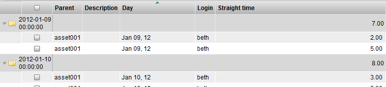
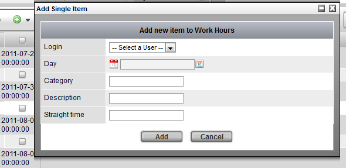

The TACTIC system has built-in work hour tracking, which can be tracked per task or work hours can be entered manually.
By default, hours can only be submitted to a task by the user that task is assigned to. For example, if an asset has a pipeline process called "texturing" and this process is assigned to the user Albert, then only Albert can log work hours for this task.
Users log work hours in a task view with the "Work Hours" column.

Hours can be logged and edited per day, per task.
To view the logged hours, go to the Work Hours view. (This view shows the hours for the user currently logged in.)

In the Work Hours view, you will see an item per time entry with totals per day and per week based on hours logged on all assets.
To manually track work hours for other events (for example, daily meetings), click the insert button and fill in the options in the pop-up window:

Options
| Login | The login (user) who the hours are for. |
| Day | The day the hours are for. |
| Category | The category of work the hours represent. |
| Description | A description of what the time was spent on. |
| Straight Time | The amount of hours for the entry. |